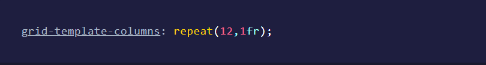
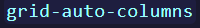

CSS Grid
Etiquetas semánticas, CSS Grid
Etiquetas semánticas, CSS Grid

Propósito del Sitio
El propósito del sitio es dinamizar y facilitar el aprendizaje del tema del manejo de CCS Grid su semántica y manera de usarlo. Esto debido a la gran relevancia de esta tecnología en nuestros días
CSS Grid
El CSS Grid es un cocepto que en 2012 en Microsoft, fue implementado por primera en un navegador, esto se hizo como un módulo tal y como el que hoy tenemos para manejo de filas y columnas en CSS Grid, Phil Cupp fue el pionero de este trabajo, él presentó la especificación que dio paso a CSS Grid.
Dicha especificación que presentó Phil Cupp y que venía implementada en Internet Explorer, no es la misma que hoy usamos, ni tampoco es la primera intención de implementar un sistema de grilla en CSS, sin embargo, esta especificación fue la primera en ser implementada en un navegador, es decir, que Internet Explorer fue el primer navegador con una implementación de grilla.
CSS Grid está basado en dos dimensiones filas y columnas, y es gracias a que el sistema en sí es de dos dimensiones que estas grillas pueden tener múltiples formas con lo cual podemos modificar cada espacio para que se extiendan a lo largo de filas y columnas, esta es la razón por la que CCS Grid es una herramienta tan flexible y poderosa con la que podemos definir esquemas.
Usos del CSS Grid
Al momento de trabajar con CSS Grid, es posible definir la grilla de dos maneras: explícita e implícita.
Cada vez que nosotros definimos la cantidad de columnas o filas que tendrá la grilla, sin importar que tamaño tengan, estamos definiendo el grid de manera explícita, como en el ejemplo que puedes ver a continuación donde definimos que la grilla tendrá 12 columnas que se dividen el espacio equitativamente:

Ahora bien si colocamos más de 12 elementos de la grilla y superamos la cantidad de columnas establecidas se creará una nueva fila para colocar los elementos que no cupieron en la primera fila y a esta segunda fila que no fue definida explícitamente se le considera parte del grid implícito.Tanto en el grid implícito como en el grid explícito es posible acomodar cada elemento en el espacio que querramos.
También es posible definir el grid explícito de tal manera que no sea necesario que exista el grid implícito. Y podemos estilizar las dimensiones del grid implícito con las propiedades  y .
códigofacilito.(S.F).Curso a fondo de CSS. Obtenido de https://codigofacilito.com/articulos/css-grid-explicito-implicito
Correo: castromejia7@gmail.com // Skype:live:josue_m0807 // Fecha:Septiembre 2022
Correo: castromejia7@gmail.com // Skype:live:josue_m0807 // Fecha:Septiembre 2022